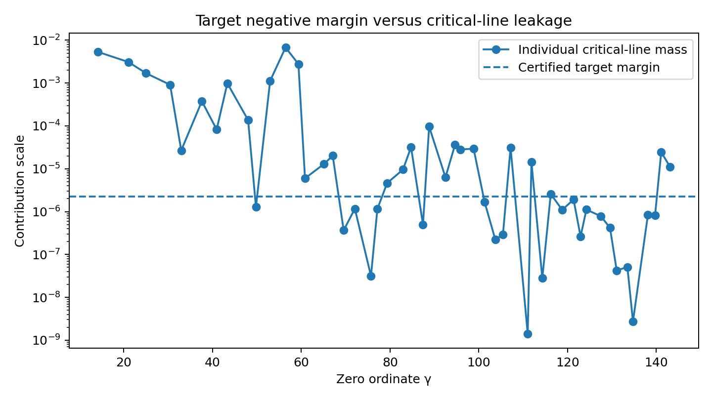
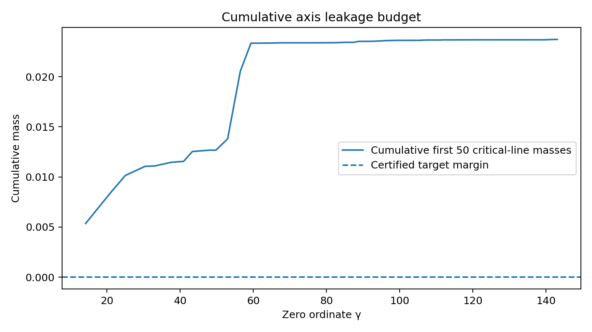

Zero-Side Leakage Budget v0.1 — 用 v0.2 同一個證書函數評價前 50 個真實臨界線零點,量化局部負裕量在完整零點和裡到底佔多少比重。
leakage_summary.json 自報 single_target_strategy_viable_without_axis_suppression=false,原樣照登。這是診斷原型,不是 RH 證明,也不是形式化零點計數證書。
本包直接沿用 v0.2 證書函數的節點數據(data/corrected_nodes.csv),回答 v0.2 技術說明結尾留下的問題。
「所以研究節點應從『交集是否存在』轉向:帶軸上抑制與全窗符號限制的聯合最佳化。」— 摘自本包技術說明 §六、七,呼應 v0.2 技術說明結尾提出的下一個必要條件。
載入中…
載入中…
包內 outputs/ 的兩張圖,原樣照登,無後製。


完整節點數據(data/corrected_nodes.csv)跟尾部殼層數據沒有逐一列出,都在完整 zip 裡。
載入中…
sha256 643b6895ea896d668601badc384b3205408d455263197bcb784a205a03682d8d